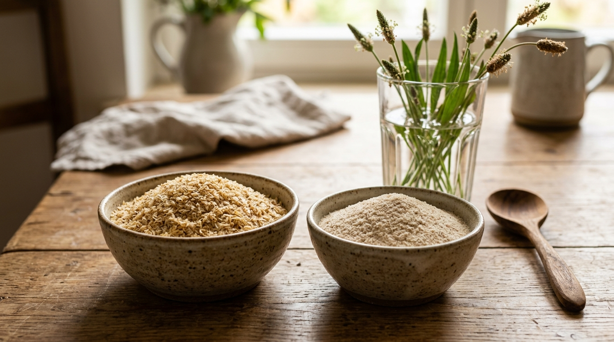
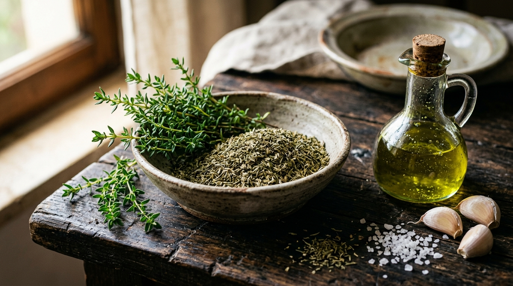
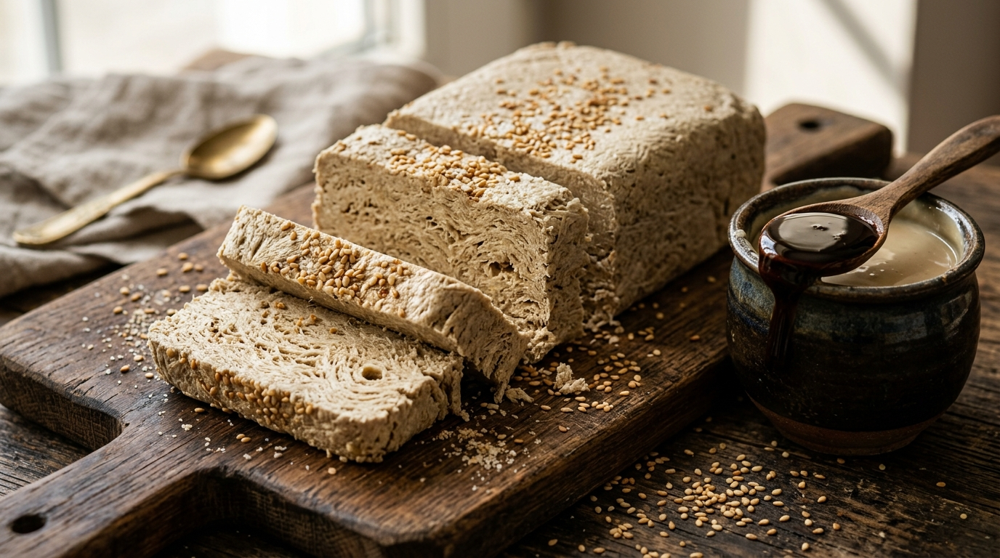
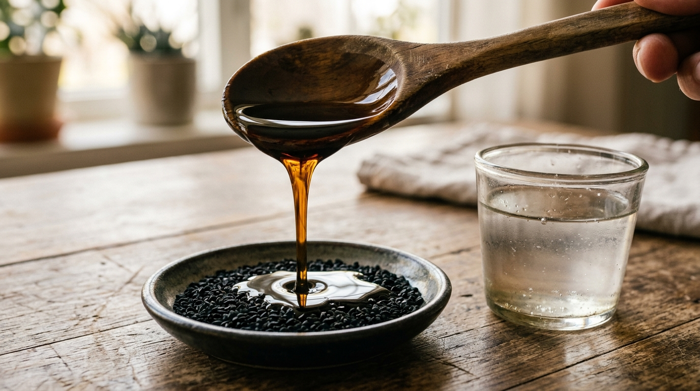
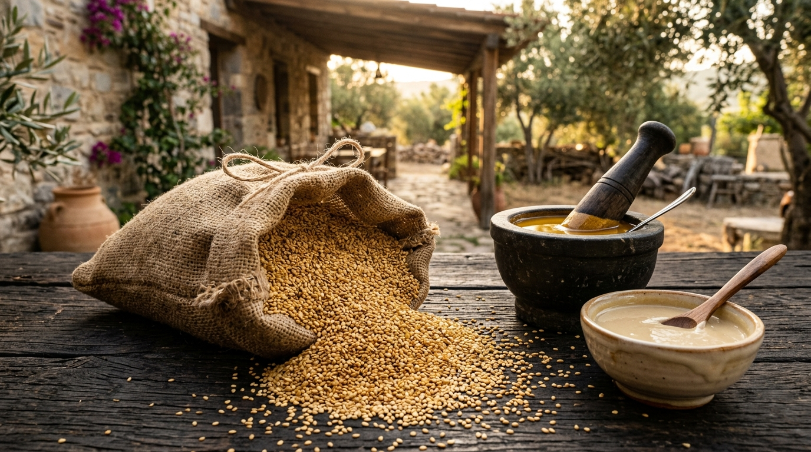
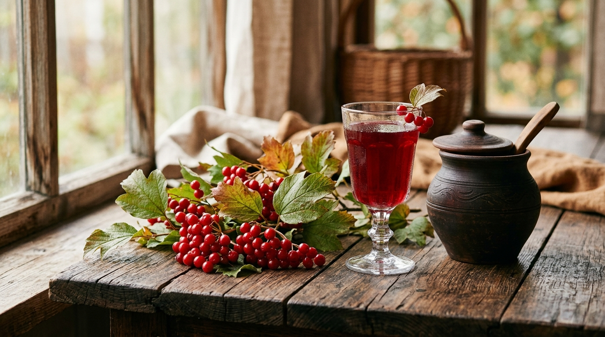
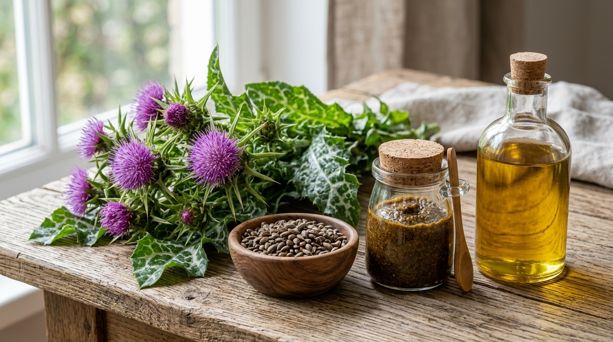
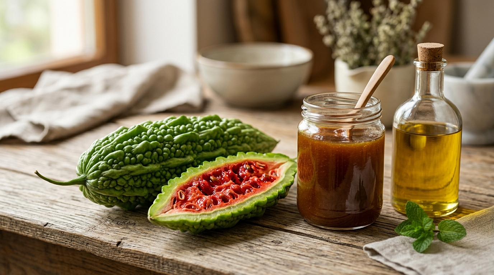
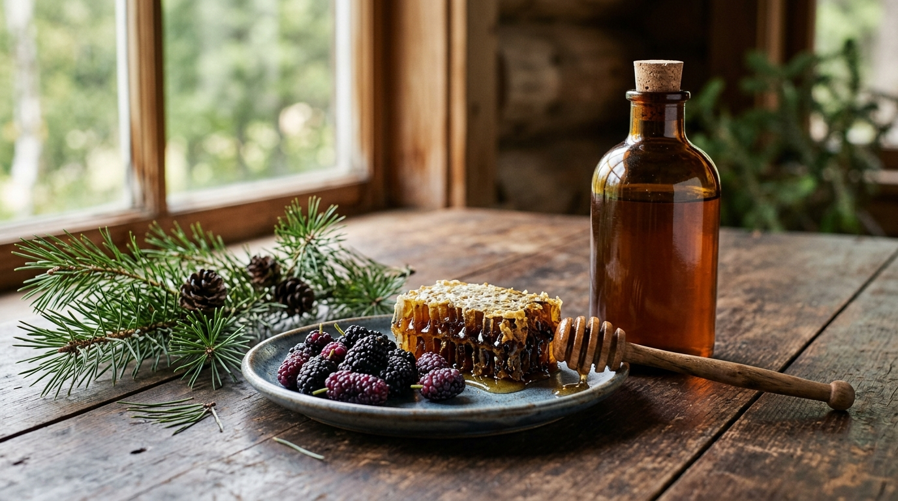
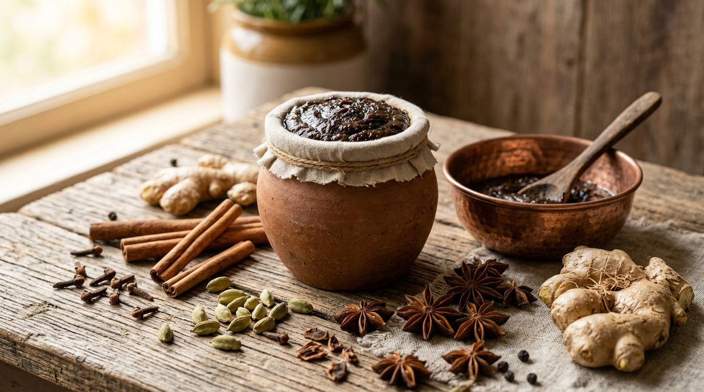

Wissen aus Anatolien
Tauchen Sie ein in unsere Sammlung an tiefgreifenden Artikeln über traditionelle Herstellungsmethoden, Pflanzenheilkunde und die Geheimnisse echter Kaltpressung.

Flohsamenschalen oder Pulver? Der entscheidende Unterschied
Ganze Flohsamenschalen (Husks) oder Pulver? Quellwert im Vergleich, Trinkkomfort, Mikrobiom-Wirkung und die richtige Wahl beim glutenfreien Backen.

Wann kommt Thymian ins Essen? Bitterkeit verhindern & Marinieren
Warum wird Thymian beim Kochen bitter? Wann getrockneter Berg-Kekik ins Essen gehört, die 3-Minuten-Regel und der Schutz durch Olivenöl.

Tahin-Halva ohne Zucker: Der Reinheitstest & gesunde Alternativen
Wie erkennt man echte Tahin-Halva ohne Glukosesirup? Der 4-Punkte-Test, gesunde zuckerfreie Rezepte mit Pekmez & Datteln im Fokus.

Schwarzkümmelöl auf nüchternen Magen: Wirkung auf Magen & Verdauung
Was passiert, wenn man morgens auf nüchternen Magen 1 TL Schwarzkümmelöl trinkt? Schleimhautschutz, Helicobacter pylori, Mikrobiom & Blutzucker im Fokus.

Gökova Goldsesam: Warum der ägäische Sesam der wertvollste der Welt ist
Alles über Gökova Altın Susam (Sesamum indicum): Mikroklima, Trockenanbau, Ark of Taste Schutz, Steinmühlen-Tahin & Nährwerte.

Gilaburu Saft: Wirkung, Ernte & die Kraft für Nieren & Harnwege
Alles über die anatolische Wunderbeere Gilaburu (Viburnum opulus): Von der frostigen Ernte und Wasserfermentation bis zur Wirkung bei Nierensteinen.

Mariendistel & Silymarin: Schutz & Regeneration für die Leber
Wie der Silymarin-Wirkkomplex, Mariendistel-Paste und kaltgepresstes Mariendistelöl die Leber und den Fettstoffwechsel natürlich unterstützen.

Bittermelone (Kudret Narı): Schutz & Balance für den Magen
Wie Mazerate in Olivenöl und Honig die Magenschleimhaut, Verdauung und den Magen-pH natürlich begleiten.

Pflanzliche Immunstärke für Kinder: Propolis & Tannenzapfen
Wie Tannenzapfen-Paste, Propolis, Schwarzkümmelöl & Maulbeersirup das kindliche Immunsystem im Winter stärken.

Anatolische Kräuterpasten (Mesir Macunu): 41 Gewürze
Die 500 Jahre alte Mesir-Tradition: Wie 41 şifalı bitki & baharat doğal enerji ve kadın/erkek dengesi sağlar.

Schwarzkümmelöl & Thymoquinon: Das Gold der Pharaonen
Eine tiefgreifende wissenschaftliche und historische Analyse von Schwarzkümmelöl (Nigella sativa), seinem Hauptwirkstoff Thymoquinon und seinen unzähligen gesundheitlichen Vorteilen.

Traditionelles Tahin: Die Kunst der Steinmühle
Erfahren Sie, warum die traditionelle Steinvermahlung von geröstetem Sesam der einzige Weg ist, um das seidige, aromatische und hochnährwertige Tahin zu produzieren.

Das alte Geheimnis der Berge: Zypressenzapfen Paste
Entdecken Sie die historische Bedeutung und die atmungsunterstützenden Eigenschaften der traditionellen anatolischen Zypressenzapfen Paste.

Die Wahrheit über Kaltpressung: Temperatur macht den Unterschied
Erfahren Sie, warum die echte, temperaturkontrollierte Kaltpressung entscheidend für die Qualität, den Geschmack und die Heilwirkung von Pflanzenölen ist.

Anatolische Traubenmelasse (Pekmez): Natürliche Energie
Erfahren Sie, wie aus sonnengereiften anatolischen Trauben durch stundenlanges Einkochen die mineralstoffreiche Melasse 'Pekmez' entsteht.

Naturtrüber Apfelessig mit der Mutter: Das probiotische Elixier
Warum unpasteurisierter Essig mit lebendiger Essigmutter ein echtes Kraftpaket für Darmgesundheit, Blutzucker und Stoffwechsel ist.

Johannisbrot-Melasse (Keçiboynuzu Özü): Das antike Superfood
Erfahren Sie, warum die mineralstoffreiche Melasse der anatolischen Karobenschoten Atemwege, Knochen und Blutbildung stärkt.

Granatapfel & Punicinsäure: Zellschutz, Herz & jugendliche Haut
Die seltene Omega-5-Fettsäure Punicinsäure und Punicalagine: Wie der Granatapfel Zellen vor vorzeitiger Alterung schützt.

Reines Arganöl: Das flüssige Gold für samtige Haut & Haare
Warum die Kombination aus natürlichem Vitamin E, Squalen und Ferulasäure das ultimative natürliche Pflegeserum ist.

Sumach Pulver (Sumak): Das zitronig-fruchtige Wundergewürz
Warum das anatolische Wildwuchs-Sumachpulver mit über 312.000 ORAC-Einheiten der weltweite Spitzenreiter beim Zellschutz ist.